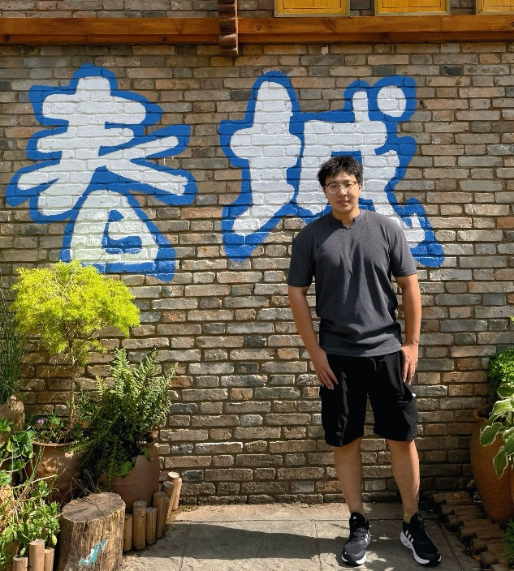
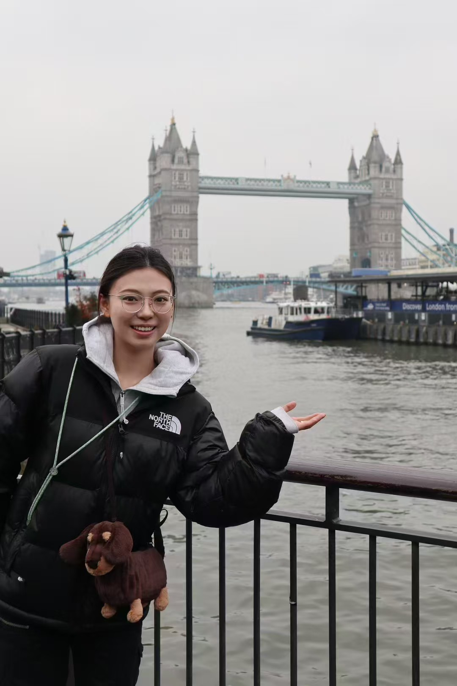
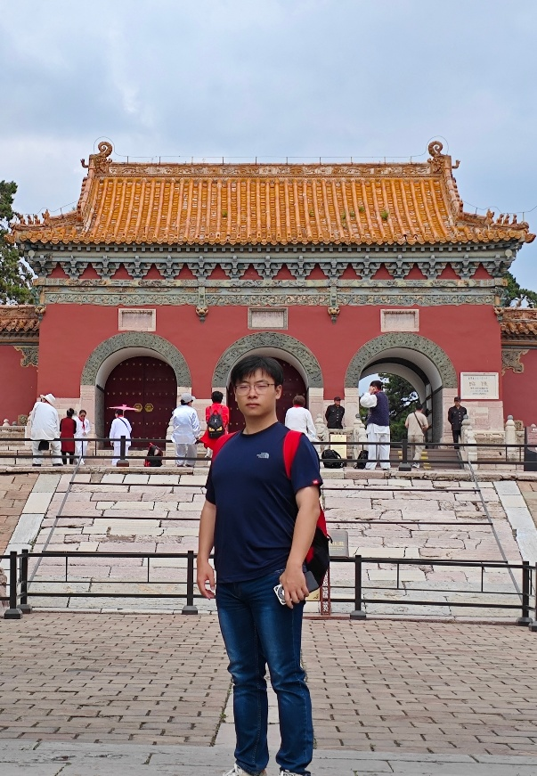
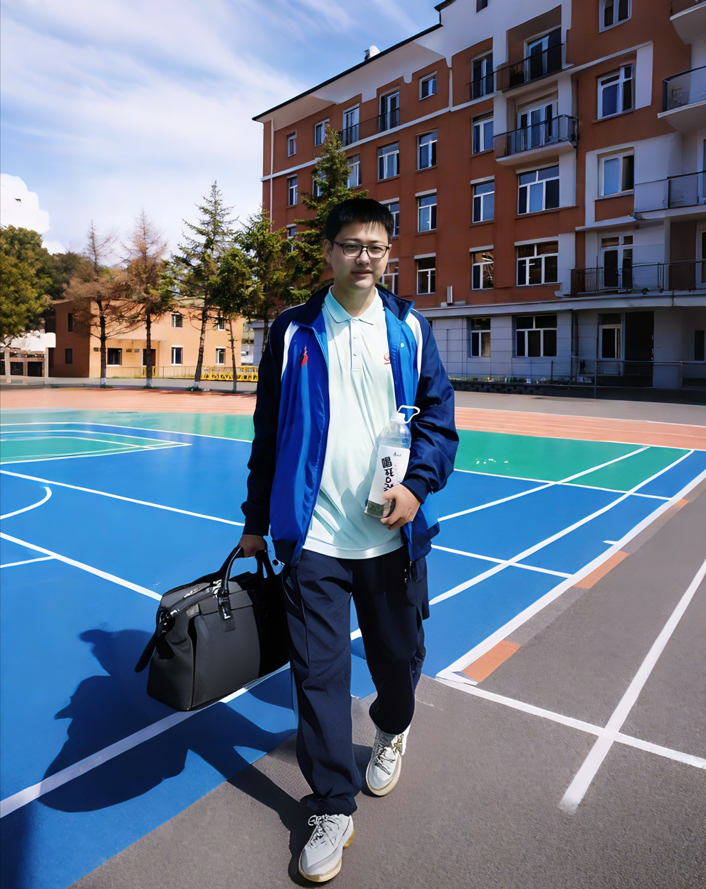

Lab Members
Qianxin Wang
PhD Student (Co-supervised with Prof. Peifeng Ma)
Email: qianxinwang@link.cuhk.edu.hk
Qianxin Wang is currently working towards her PhD degree at the Department of Geography and Resource Management, The Chinese University of Hong Kong. She obtained her MSc degree in Cartography and Geographic Information Systems from the Chinese Academy of Sciences. She also earned her BS degree in Geographic Information Science from the China University of Petroleum. Her research interests include monitoring vegetation change and restoration, carbon neutrality, and the application of advanced Earth Observation technology.

Youran Fu
Mphil Student (Co-supervised with Prof. Peifeng Ma)
Email: fuyouran@link.cuhk.edu.hk
Youran Fu is currently a Mphil student at the Institute of Space and Earth Information Science, The Chinese University of Hong Kong. He received his BE degree in Computer Science and Technology at the Beijing Institute of Technology in 2023. His research interests are machine learning-based carbon analysis and computer vision in remote sensing images.

Chuoran Li
Research Assistant
Email: chuoranli@cuhk.edu.hk
Chuoran Li is currently a Research Assistant and will start his PhD program in Fall 2026 at the Institute of Space and Earth Information Science, The Chinese University of Hong Kong. He received his BSc, LLB, and MSc degrees from Tianjin University. His research focuses on urban sustainability, natural hazards, and ecological-environmental interactions.
Yuze Wang
Research Assistant
Email: wyz1044891008@gmail.com
Yuze Wang is currently a Research Assistant and will start his PhD program in Spring 2027 at the Institute of Space and Earth Information Science, The Chinese University of Hong Kong. He obtained his MSc degree from the University of Tokyo in 2026. He also earned his BEng degree in from Wuhan University in 2024. His research interests include earth observations, natural disasters and artificial intelligence.

Zhiyu Ye
Research Assistant
Email: yezhiyugogogo@163.com
Zhiyu Ye is currently working as a Research Assistant and will begin her Ph.D. studies at the Institute of Space and Earth Information Science, The Chinese University of Hong Kong, in Spring 2027. She received her M.Eng. degree from Wuhan University and her B.Sc. degree from Xinjiang University. Her research interests focus on long-term remote sensing monitoring of environmental dynamics, global climate change, and the ecological effects of wetland and lake ecosystems.
Xiaoming Sun
Research Assistant
Email:xiaomingsun2023@163.com
Xiaoming Sun is currently a Research Assistant at the Institute of Space and Earth Information Science, The Chinese University of Hong Kong. She received her MEng degree in Resources and Environment from China University of Geosciences, Wuhan. Her research focuses on deep learning, particularly transfer learning and self-supervised learning.

Mingze Fang
Research Assistant
Email: mzfang@cuhk.edu.hk
Mingze Fang is currently a Research Assistant at the Institute of Space and Earth Information Science, The Chinese University of Hong Kong. He obtained his MSc degree in Data Science from City Unviersity of Hong Kong in 2024. He also earned his BEng degree in Environmental and Ecological Engineering from Dalian University of Technology in 2021. His research interests include ecological environment monitoring, time series modeling and causal inference, and the application of data science.
Liyan Wu, Michelle
Undergraduate Student
Email:1155211083@link.cuhk.edu.hk
Liyan Wu, Michelle is currently an undergraduate student at the Department of Geography and Resource Management, The Chinese University of Hong Kong. Her research interests lie at the intersection of urban environmental studies, social inequalities, and geospatial data science.

Bizheng Wu
Undergraduate Student
Email:1155236907@link.cuhk.edu.hk
Bizheng Wu is currently an undergraduate student in the Double Major Program (ECE&ASEI) jointly offered by The Chinese University of Hong Kong and The Chinese University of Hong Kong (Shenzhen). His research focuses on the intersection of artificial intelligence and remote sensing technology.
Ming Du
Undergraduate Student
Email: 1155236892@link.cuhk.edu.hk
Ming Du is currently an undergraduate student in the Double Major Program jointly cultivated by The Chinese University of Hong Kong and The Chinese University of Hong Kong, Shenzhen. His research interest is the combination of deep learning and remote sensing.